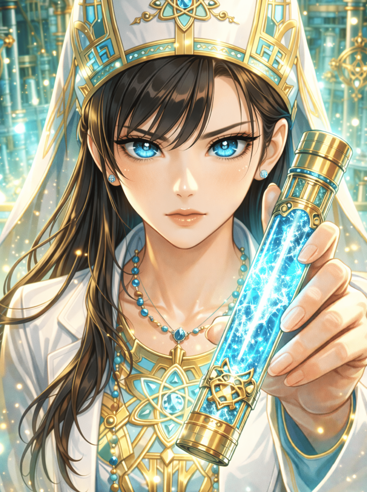

数百年の歴史を持つとされる、「眠り村」。
その地下には古代の遺跡が眠ると伝えられ、閉ざされた環境の中で人々は独自の信仰と労働至上主義の元に生きていた。
探索者たちは、警察関係の友人から「村で発生している原因不明の『眠り病』を極秘裏に調査してほしい」との依頼を受け、この村へと足を踏み入れることになる。
しかし、そこで彼らを待ち受けていたのは、遺跡を巡る巨大企業と宗教団体の暗躍、そして村そのものの存在を揺るがす恐るべき陰謀だった──。
村を支配し、役割を分担する「五つの名家」
時間と空間の罠： 古代遺跡や古い村など最初から存在しない。
全ては「原発事故を起こした発電所の敷地内」に作られた仮設居住区であり、経過した時間はたったの「5年」に過ぎない。
一族の罠： 五大名家という血筋も虚構である。
NPCたちは全員が同世代（16〜22歳）の「兄弟姉妹（全25名）」であり、親は不在。作られた村社会を維持するために「役割（ロール）」を演じさせられているモルモットたちである。
「急約聖書」: 真相にたどり着けず、ツァトゥグァが顕現して世界が終焉を迎える。
「欠落園」: 不完全な不老不死技術により人口爆発が起こり、閉鎖空間内の資源が枯渇する地獄へ至る。